代号·回档
第一章 · 星期一永远不会结束
时间循环
AI创业
系统文
V5 · 第一人称
↓ 向下滑动开始阅读 ↓
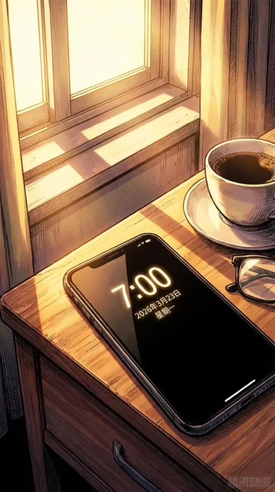
2026年3月23日，星期一。
闹钟响了。又是一个星期一。
昨晚三点半才睡。B轮路演PPT改到了第十七版。
我坐在床边揉了揉眼睛，公寓里安静得只听得到空调的嗡嗡声。
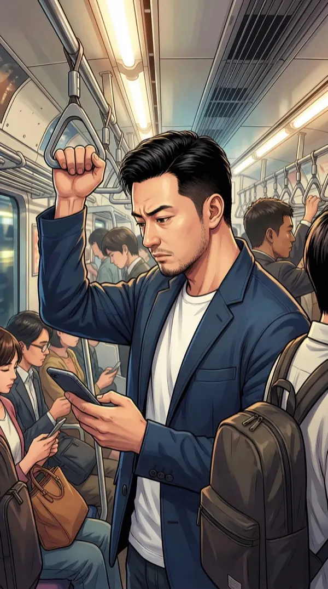
八点半，地铁里。手机震了一下。
CTO李明发来消息：「江总，出事了，看看这个」
李明从来不在早上八点半发消息。除非——天塌了。
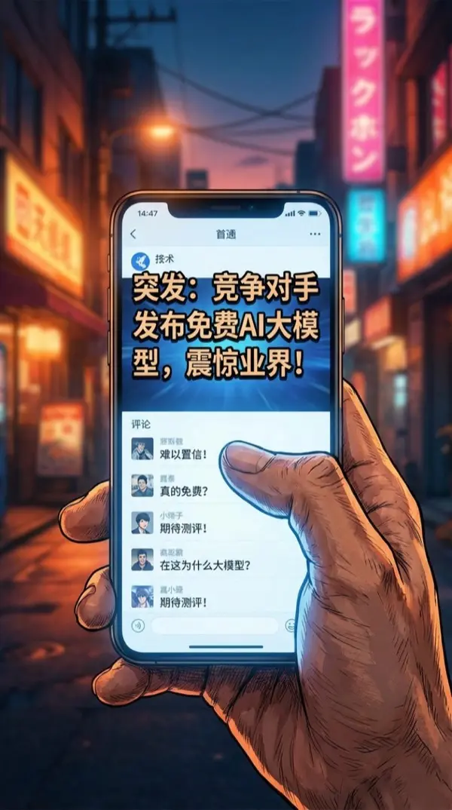
启元科技发布「天枢」大模型，API免费开放，性能碾压GPT-5。
我们的核心壁垒。刚被人免费公开了。
评论区第一条："创业公司棺材板钉好了没？"——谢谢，很暖心。
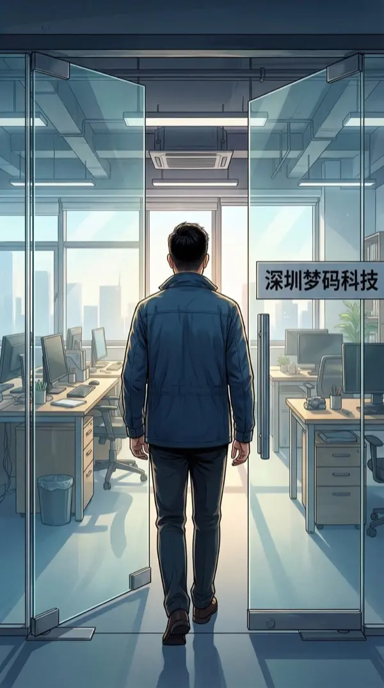
「深圳梦码科技」。推开玻璃门，三排工位大部分空着。
三个月前三十人。现在连我七个。
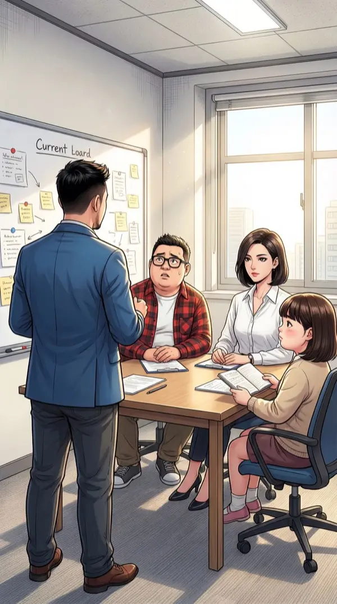
紧急全员会议。五个人围着一张能坐十二人的会议桌。
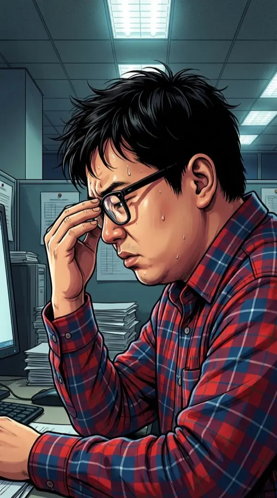
李明推了推眼镜，额头上全是汗。他的格子衬衫领口已经被揉皱了。
技术壁垒没了...我们的差异化还剩什么？
实习生小陈的笔记本上写满了「完了完了完了完了」——字迹在发抖。
林薇端着咖啡杯，表情不变。银色腕表在日光灯下闪了一下。
技术壁垒从来不是真的壁垒。执行力才是。
林薇说得对。不是输在技术上，是输在时间上。
投资人王总的电话进来了。
小朱啊，今天下午路演...启元的事你看到了？要不要另找时间？
◆ 决策点 #1 ◆
我没犹豫。
王总，照常。两点准时见。
菩萨心肠，霹雳手段。面对危机，正面刚。
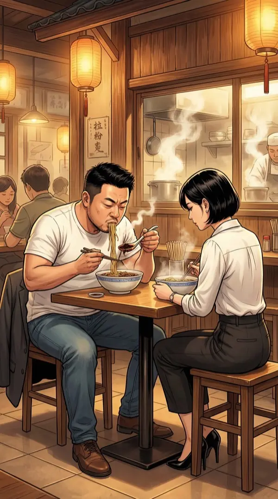
楼下面馆。我和林薇对坐，她点了一碗清汤面。
你真觉得路演能过？
我嘴里含着面条，往碗里又舀了一勺老干妈。第三勺。
我觉得...这碗面加了老干妈之后，人生还有希望。
老板从后厨探出头看了我一眼，表情像在看一个壮烈赴死的勇士。
◆ 决策点 #2 ◆
如果不过呢？
再吃一碗面。
我笑着说。但低头看到自己捏筷子的手指关节发白。
苦中作乐。这是我唯一会的活下去的方式。
下午两点。落地窗外是深圳CBD的天际线，阳光刺得人睁不开眼。
对面坐着三位投资人。王总居中，两鬓花白，三件套扣得一丝不苟。
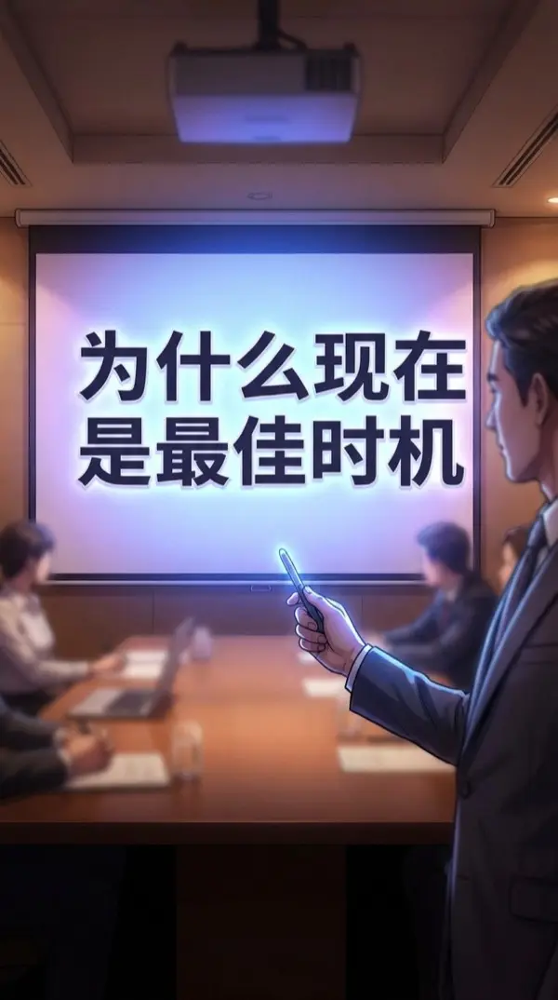
PPT第十七版。标题：「为什么现在是最好时机」。
说实话，我自己都不太信这个标题了。
讲到第八页，我停了。然后合上了笔记本电脑。
◆ 决策点 #3 ◆
启元发了免费API，你们看到了。
我告诉你们——我们七个人，今天早上九点到现在，没有一个提过离职。
房间安静了三秒。
正常路径堵死了。那就绕道。用真话当武器。
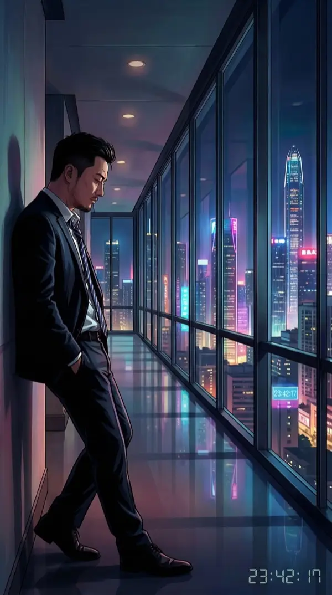
路演结束。走廊尽头，落地窗映着深圳的万家灯火。
我靠着墙，松了松领带。
王总的表情我读不出来。但今天那些话——不是真话，一个字都说不出来。
[ LOOP #1 — 23:42:17 ]
■ 循环开始 ■
23:59:59。
我趴在办公桌上，电脑屏幕的蓝光映在脸上。
今天...结束了吧。
然后——白光。
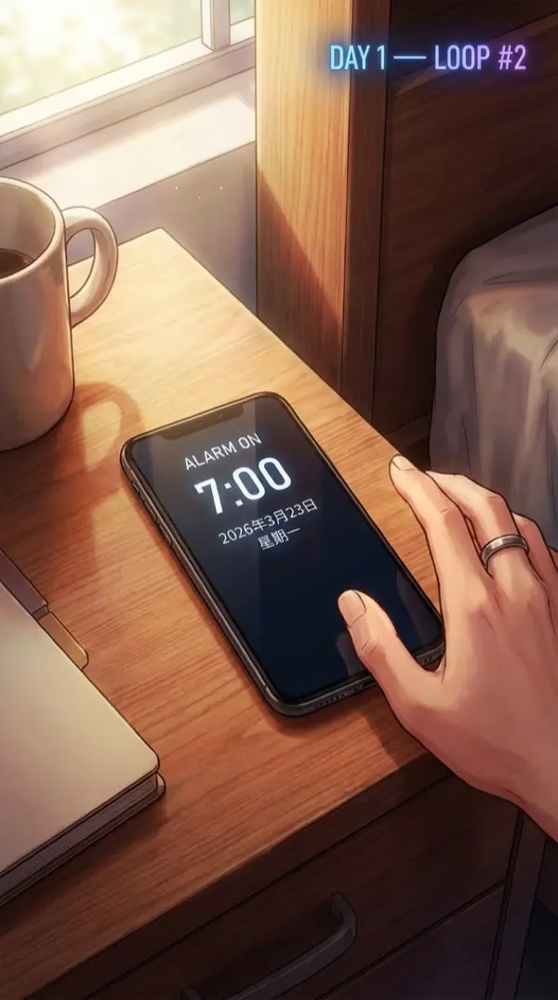
DAY 1 — LOOP #2
闹钟响了。7:00。
屏幕上的日期：2026年3月23日。星期一。
什么情况？！
我记得趴在办公桌上...怎么回到了床上？
灰色T恤。黑色短裤。和早上起床时一模一样。
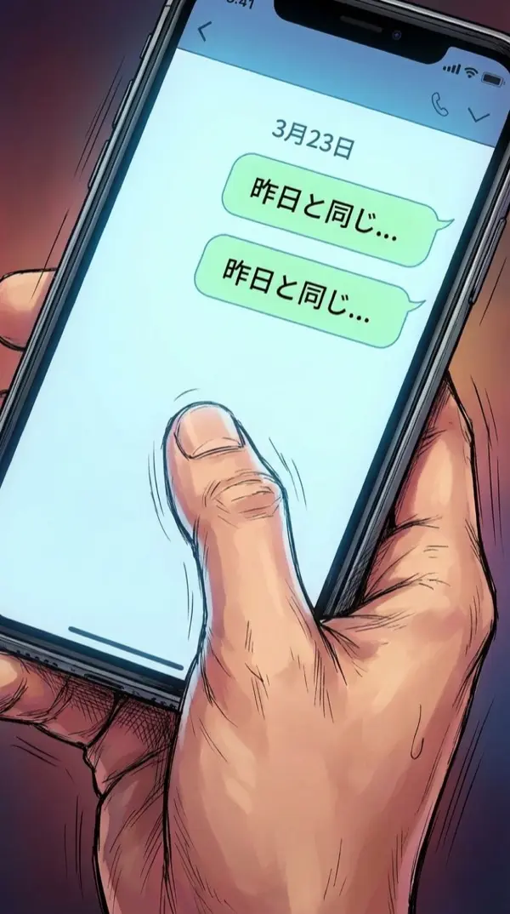
拿起手机。3月23日。李明的消息——一个字不差。
这条消息...我昨天看过。
我摸了摸自己的脸。
络腮胡还在。OK，至少我还是我。
但这种从困惑到惊恐的感觉...不是做梦能解释的。
地铁上。一切和昨天完全一样。相同的乘客，相同的播报。
那个棺材板评论应该在第三条。
我打开新闻。评论区——第三条，一字不差。
我倒吸了一口凉气。
到公司门口，我停下了。掏出手机，新建备忘录：
「循环规则测试 #1」
黑客思维启动。既然遇到了bug——那就系统性地测试它。
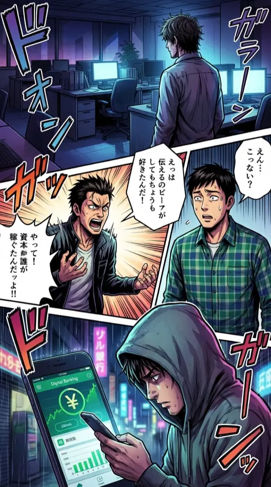
测试1：不去公司 → 队友更慌，李明打了七个电话。
测试2：提前告诉李明「今天天枢会发布」 → 他以为我疯了。
测试3：转100块到另一个账户 → 循环后余额恢复原样。
连一百块都留不住。创业公司日常。
结论：记忆保留。物质不保留。我，是唯一的变量。
下午。经过林薇办公桌的时候，余光扫到了一份文件。
🔓 [ 观察力 Lv.1 解锁 ]
📋 [ 异常：林薇桌上「启元科技·天枢白皮书」标注日期3月26日 ]
今天3月23日。这份白皮书...标注日期是三天后。
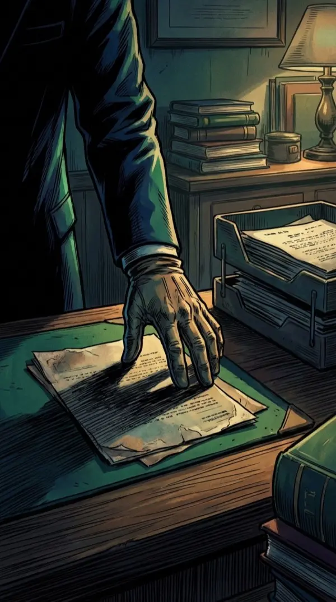
我的手不由自主地伸向那份文件——
身后传来高跟鞋的声音。我猛地收手，碰倒了桌上的水杯——
单手接住。水只洒了一点。装作若无其事地擦桌子。
林薇走过来，看了我一眼。
你站我工位干嘛？
啊...找订书机。
林薇。我最信任的合伙人。她桌上为什么有三天后的文件？
这轮路演，我改了策略。领带是松的——Loop#1的遗留习惯。
◆ 决策点 #4 ◆
王总，如果一家公司的合伙人，提前拿到了竞对三天后才发布的白皮书——这意味着什么？
全场沉默。
王总放下了手中的茶杯。他的眼神变了。
DAY 1 — LOOP #2 — 23:58:41
⚠️ [ 循环即将重置。已收集数据：3/??? ]
走廊里。我蹲在地上，笔记本上画满了时间线和箭头。
还有两分钟。
但有一件事让我脊背发凉——
笔记本上的字...正在一个字一个字消失。
⚠️ [ 警告：物理记录不可跨循环保留。请升级记忆系统。]
闪白。
DAY 1 — LOOP #3